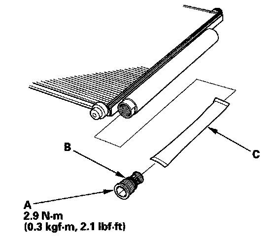

Receiver Dryer: Service and Repair
Receiver/Dryer Desiccant ReplacementNOTE: Install the receiver/dryer as quickly as possible to prevent the system from absorbing moisture from the air.
1. Remove the A/C condenser.

2. Remove the cap (A) from the bottom of the A/C condenser. Remove the O-ring (B) and the desiccant (C).
3. Install the receiver/dryer in the reverse order of removal, and note these items:
- Replace the O-rings with new ones, and apply a thin coat of refrigerant oil (DENSO ND-OIL 8) before installing them. Be sure to use the correct O-rings for HFC-134a (R-134a) to avoid leakage.
- Install the cap to the specified torque. It is made of resin and can be easily stripped.